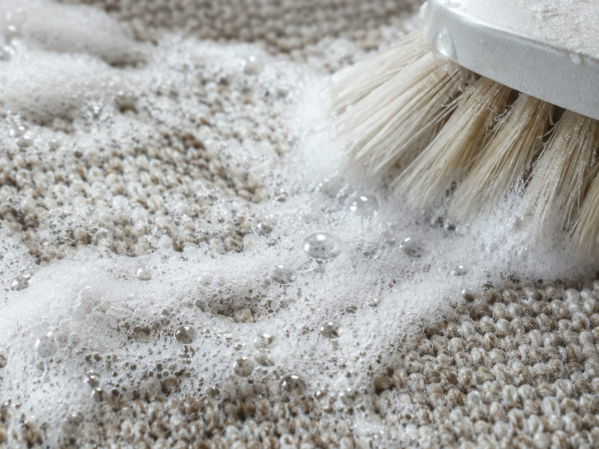

Как проходит химчистка
Пять шагов от осмотра до приёмки. Плюс честно о сушке и о том, какие пятна иногда остаются навсегда.
Как проходит чистка
Один выезд — один результат. Ниже то, что происходит от звонка до момента, когда мебелью снова можно пользоваться.
- 01
Осмотр и тест
Смотрим ткань, швы, тип загрязнений. Тестируем средство там, где не видно: под подушкой или на задней стенке.
- 02
Сухая уборка
Пылесосим пыль, крошки, шерсть и песок. Если этого не сделать, при намокании всё превратится в грязевую корку внутри ворса.
- 03
Средство и время
Наносим состав под конкретную ткань и загрязнение. Даём ему отработать, не позволяя высохнуть — иначе грязь «закрепится».
- 04
Экстрактор
Вымываем грязь вместе с остатками средства, проходим ворс щёткой и убираем разводы по краям.
- 05
Сушка и приёмка
Ускоряем сушку, показываем результат при хорошем свете и объясняем, как ухаживать дальше.

средства · под тканьЧем чистим
Экстрактор, который подаёт раствор под давлением и тут же вытягивает его обратно вместе с грязью. Плюс щётки для ворса, средства для разных тканей и отдельные составы для пятен.
- Экстракторная чистка с вымыванием средства
- Профессиональные составы под тип ткани и загрязнения
- Отдельная химия для жира, кофе, вина, косметики, животных
- Средства для кожи и экокожи
- Вентилятор для ускорения сушки
Химию привозим с собой: вам не нужно ничего покупать и готовить.
Сушка и первые часы
Мебель после экстрактора влажная на ощупь — это нормально. Что помогает ей высохнуть быстрее и не испортить результат.
- Откройте окна: сквозняк сушит в разы быстрее, чем закрытая комната
- Не садитесь на мебель, пока обивка не высохла — останутся заломы ворса
- Подушки можно поставить вертикально, чтобы проветрились со всех сторон
- Не используйте обогреватель вплотную к ткани — от горячего воздуха возможны разводы
- Если что-то осталось непонятным или появился вопрос — позвоните, подскажу по вашей ткани
Точное время высыхания зависит от ткани, наполнителя и проветривания помещения: где-то это пара часов, где-то дольше. На месте скажу, чего ждать именно в вашем случае.
О процессе
Разводы появляются, когда средство не вымыли или высушили неравномерно. Мы вымываем состав экстрактором и выравниваем ворс щёткой. Запах у средств профессиональный и выветривается по мере высыхания.
Обычный диван — примерно час-полтора работы без учёта сушки. Угловой, сильно загрязнённый или комплект мебели — дольше. Точнее скажу по фото.
Скажу об этом до начала работы, если вижу риск: старые пятна от краски, чернил или отбеливателей иногда оставляют след навсегда. Честно предупредить лучше, чем обещать невозможное.
Остались вопросы по вашей ткани?
Пришлите фото обивки — скажу, что получится, а что нет.
+375 (29) 501-76-04Записаться на чистку
Имя, телефон и что нужно почистить — перезвоню и назову цену.